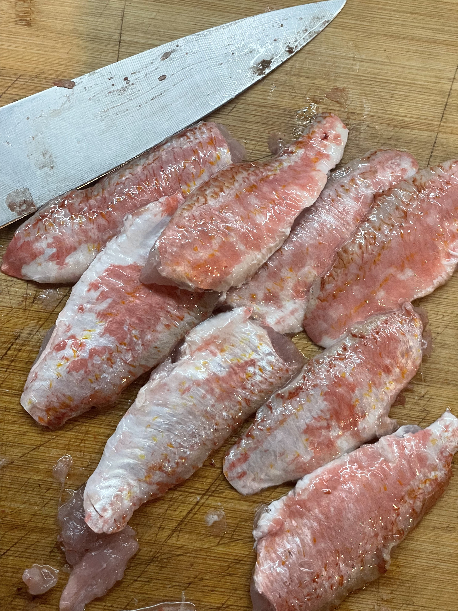
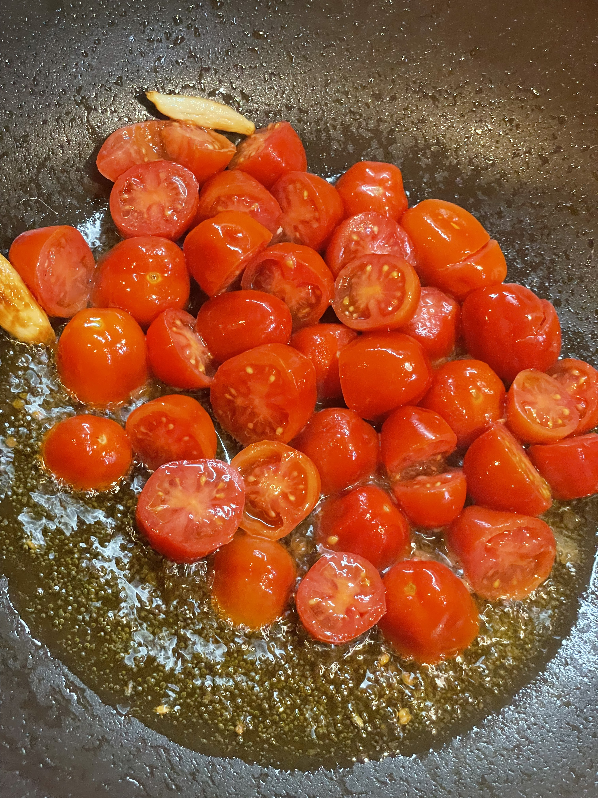
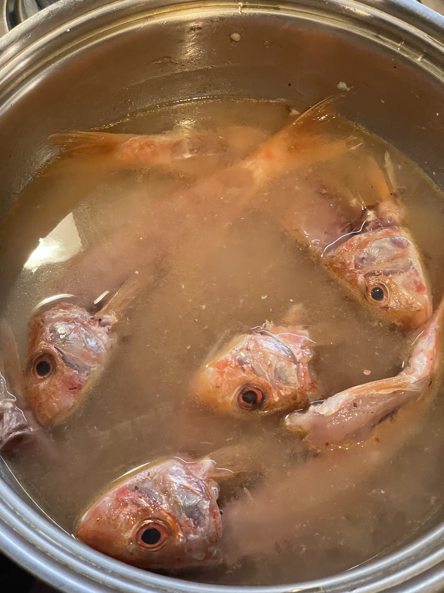
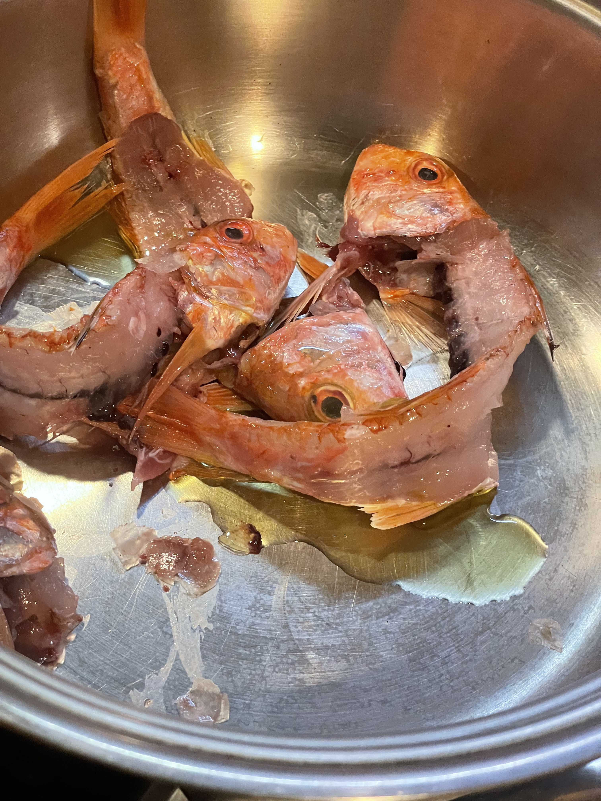

Pasta al ragù di triglie e al succo d'arancia
Introduzione e contesto

Il tutto dipende dalla freschezza delle triglie. Rigorosamente di scoglio (si riconoscono dagli intestini che non contengono sabbia e sono più profumati).
Ingredienti
| Ingrediente | Quantità | Unità | Note |
|---|---|---|---|
| Spaghetti | |||
| Triglie di scoglio | media grandezza | ||
| Mandorle sgusciate | |||
| Pomodorini maturi | |||
| Arancia matura | 1 | ||
| Prezzemolo | |||
| Aglio | |||
| Olio extra vergine d'oliva | |||
| Origano | |||
| Pistilli di zafferano. | |||
Preparazione

Le triglie vanno sfilettate e diliscate.
In un tegame fare soffriggere l'olio (alcuni cucchiai) con 1 spicco d'aglio, dall'altro la polpa dei pomodorini spellati (ca. 3 o 4 per triglia). Pestare le mandorle (sempre 3 o 4 per triglia),quindi aggiungere il prezzemolo, pepe, sale, origano (un pizzico se molto saporito), alcuni pizzichi di pistilli di zafferano.




Cuocere la pasta al dente, a mio avviso gli spaghetti sono la scelta migliore, ma vanno molto bene anche paste corte come le mezze penne rigate. Poco prima di scolare pasta aggiungere al tegame della salsa di pomodoro i filetti di triglia e i condimenti preparati, fare cuocere fin tanto che i filetti si disfano.
Assolutamente non di più. Scolare la pasta, spadellare aggiungendo il succo di una arancia matura.
Abbinamento: immagino un vino bianco non troppo secco. Alcamo?
Note e osservazioni
- Per la cottura della pasta usare acqua ben salata e scolare con il condimento già pronto.
{kind=link}